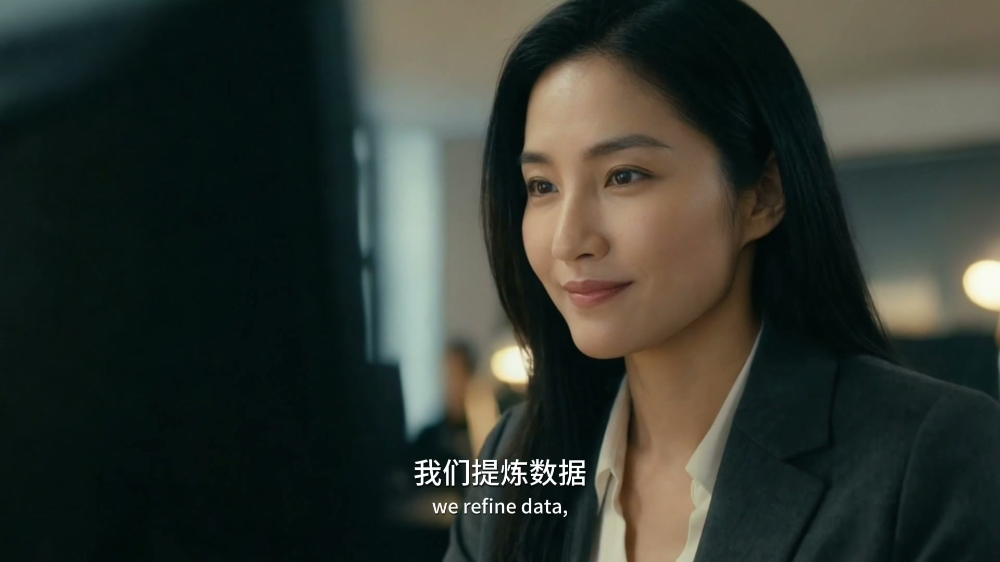
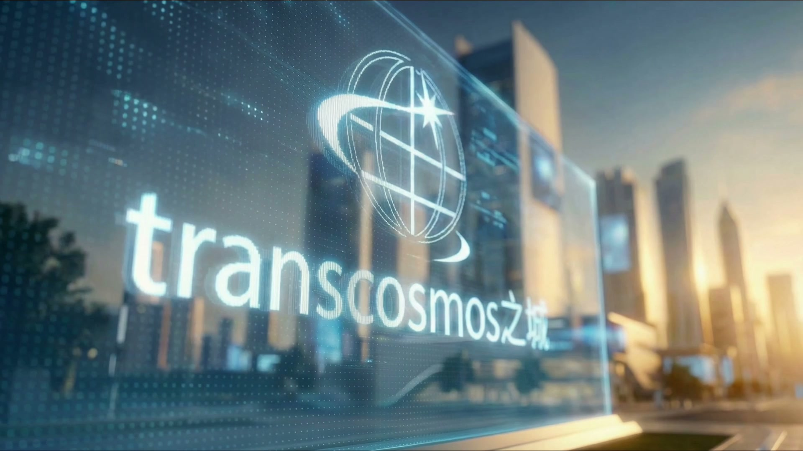

真正决定AI项目成败的，
不只是模型和算力。
业务流程、知识、数据、权限、既有系统和人员协作，需要一起改变。我们从业务问题出发，帮助客户评估场景、建设能力、接入系统，并持续验证实际价值。
BUSINESS FIRST
PRODUCTION READY
HUMAN IN THE LOOP
CONTINUOUS IMPROVEMENT
业务流程、知识、数据、权限、既有系统和人员协作，需要一起改变。我们从业务问题出发，帮助客户评估场景、建设能力、接入系统，并持续验证实际价值。
长期服务制造、物流、企业运营与IT基础设施领域。我们既理解日系企业和制造现场，也具备软件、数据、云、AI和持续运营能力。
扎根苏州，长期服务日系与制造客户。
软件工程、项目管理与持续改善机制。
把信息安全与权限治理带入项目全程。
苏州、上海、常州协同支援长三角客户。

AI贯穿所有能力，但企业真正需要的是能够进入现有流程和系统的组合方案。
三个应用领域，共享同一套业务理解、工程集成与持续运营方法。
共同定义成功标准，先用可验证的方式试点，再完成数据、系统、权限和人员流程的集成。
访谈、现场与流程理解，明确问题和成功标准。
选择技术，完成原型或PoC，验证价值与风险。
连接数据、系统、权限、工具与现场设备。
进入生产环境，完成培训、流程与人工复核设计。
持续观察使用、成本、质量、风险和业务效果。
案例先说明客户原有问题、系统连接与人机协作，再说明项目状态和结果。

本地模型、企业知识库、来源引用和人工确认共同进入品质、制造与设备咨询流程。
让AI进入既有制造系统，而不是另建一个孤立工具。
运维智能体辅助检索、分析与标准任务，关键操作保留人工审批。
从无纸化与库存可视化开始，逐步连接AGV/AMR与现场执行。

连接上下文、知识、模型和数字工具。
对接ERP、MES、WMS、调度、数据与权限。
与设备和机器人伙伴协作，连接感知、执行与持续运营。
在严肃业务中，坚持人工复核、权限控制、日志审计与持续运营，让AI可控、可用、可扩展。